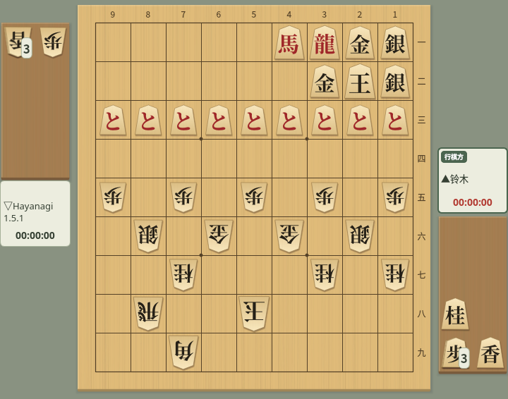
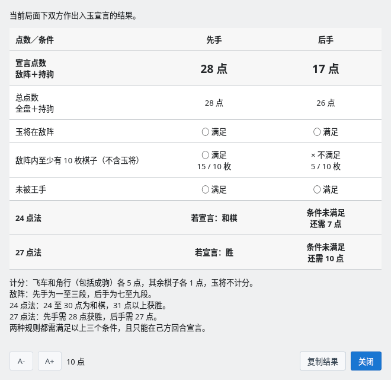
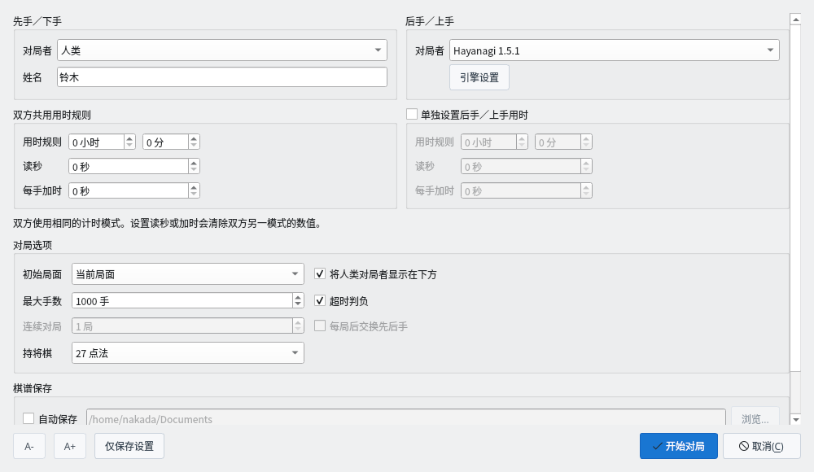
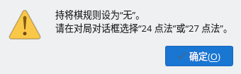
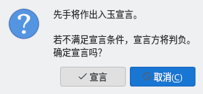
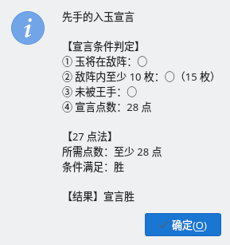
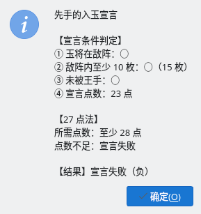
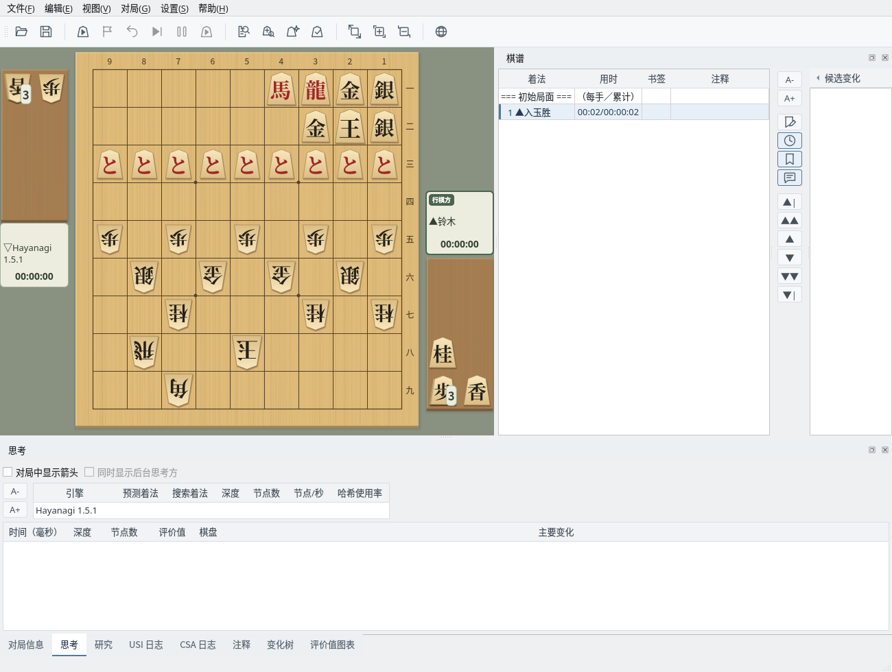

确认持将棋点数并判定入玉宣言
截图在 Linux 上以简体中文界面拍摄。
确认当前显示局面的点数与宣言条件
双方的王都进入对方阵地（入玉）后，就很难通过将死取胜。在这样的局面中，可以确认持将棋点数并进行入玉宣言。本例中先手的王在２二，后手的王已进入５八。

入玉的局面：先手在敌阵有 15 枚棋子，加上持驹共 28 点
选择“对局”→“持将棋点数”，即可显示在当前局面中先手、后手各自进行入玉宣言时的判定。不在对局中时也可以使用。
点击“复制结果”可将内容复制到剪贴板。敌阵对先手为一～三段，对后手为七～九段。

持将棋点数：先手 28 点，按 27 点法宣言胜，按 24 点法和棋；后手敌阵棋子不足，条件未满足
在对局中轮到自己时进行入玉宣言
在可能进行入玉宣言的对局中，请在对局对话框的“持将棋”中选择“24 点法”或“27 点法”。
| 24 点法 | 宣言点数 31 点以上为胜，24～30 点为和棋（持将棋） |
| 27 点法 | 先手需要 28 点以上、后手需要 27 点以上才能获胜 |
两种规则都需要满足 3 个宣言条件。规则为“无”时尝试宣言，会提示选择规则。

对局对话框：在“持将棋”中选择 24 点法或 27 点法

规则为“无”时宣言：提示在对局对话框中选择规则
轮到自己时选择“对局”→“入玉宣言”，会显示确认，点击“宣言”即进行宣言。不满足宣言条件时宣言方判负，建议先用“持将棋点数”确认。
入玉宣言由人类对局者在自己的回合进行。引擎的回合无法宣言，引擎之间的对局中该菜单不可用。

入玉宣言的确认：点击“宣言”进行宣言，点击“取消”继续对局
判定宣言条件并结束对局
满足全部宣言条件时宣言胜，对局结束。结果中会显示各条件的判定以及所用规则需要的点数。

宣言胜：满足条件，达到 27 点法所需的 28 点
点数不足等不满足宣言条件时宣言失败，宣言方判负（犯规负）。按 24 点法宣言点数为 24～30 点时为“持将棋（和棋）”。

宣言失败：27 点法需要 28 点，实际为 23 点，宣言方判负
宣言后，棋谱栏会记录“▲入玉胜”（宣言失败为“▲犯规负”，24 点法和棋为“▲持将棋”）。引擎进行入玉宣言时也会同样记录，并以“对局结束”显示结果。CSA 网络对局中，宣言会发送到服务器，由服务器判定。

宣言后：棋谱栏记录“▲入玉胜”